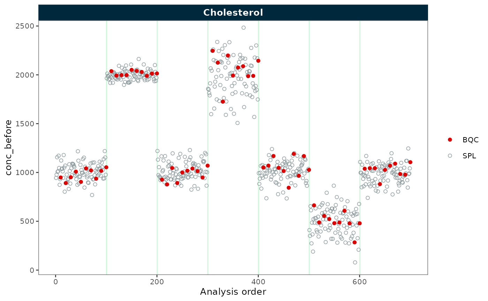
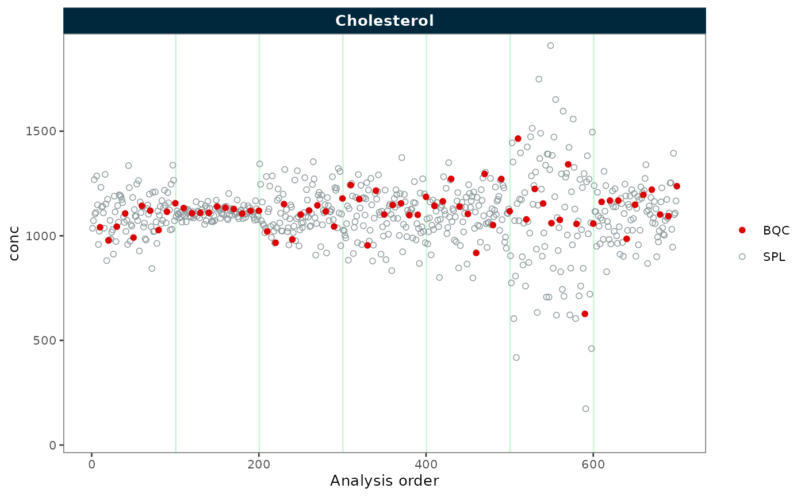
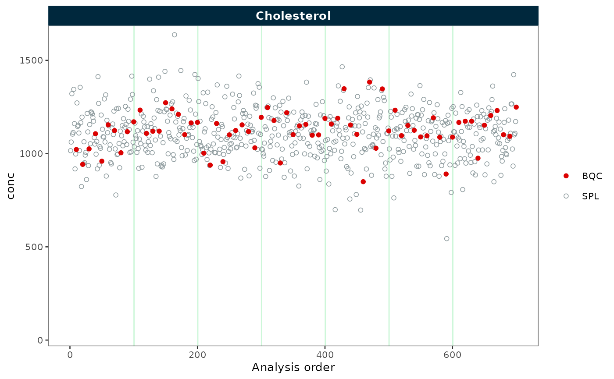

Batch-effect correction
Source:vignettes/articles/tutorial-06-batch-correction.Rmd
tutorial-06-batch-correction.RmdMRMhub currently supports median centering-based batch effect correction.
The data must be provided via a MRMhubExperiment object, whereby raw
data that was imported or processed data can be corrected, such as
intensity or conc values.
Import data
In this tutorial, we import pre-calculated concentration values from
a CSV file. This file must contain a column with batch information
(batch_id), see import_data_csv() for more
information.
library(mrmhub)
myexp <- mrmhub::MRMhubExperiment()
myexp <- import_data_csv(
myexp,
path = "simdata-u1000-sd100_7batches.csv",
variable_name = "conc",
import_metadata = TRUE)Apply batch-centering
Now we center the concentration values of batches based on a
reference qc type, the samples (ref_qc_types = "SPL") in
this case. The correct_scale parameter
myexp <- correct_batch_centering(
data = myexp,
variable = "conc",
ref_qc_types = "SPL",
correct_scale = FALSE
)
#> ℹ Adding batch correction to `conc` data.
#> ✔ Batch median-centering of 7 batches was applied to raw concentrations of all 1 features.
#> ℹ The median CV change of all features in study samples was -30.49% (range: -30.50% to -30.50%). The median absolute CV of all features decreased from 44.05% to 13.56%.Next, we inspect the data before and after batch correction. We observe that the batches are now aligned. Note: If the samples or other quality control types do not follow the reference samples, they may not be appropriately corrected.
plot_runscatter(myexp, variable = "conc_before", rows_page = 1, cols_page = 1)
plot_runscatter(myexp, variable = "conc", rows_page = 1, cols_page = 1)
Batch-centering with variance scaling
Above, we observe that while the batches are aligned, the spread
(variance) of the data points varies considerably between the batches.
We can correct this by scaling the variance via
correct_scale = TRUE. As shown in the plot below, the
variance of the data points now appears fairly consistent across the
batches.
myexp <- mrmhub::correct_batch_centering(
myexp,
ref_qc_types = "SPL",
variable = "conc",
correct_scale = TRUE
)
#> ℹ Replacing previous `conc` batch correction.
#> ✔ Batch median-centering of 7 batches was applied to raw concentrations of all 1 features.
#> ℹ The median CV change of all features in study samples was -32.20% (range: -32.20% to -32.20%). The median absolute CV of all features decreased from 44.05% to 11.85%.
plot_runscatter(myexp, variable = "conc", rows_page = 1, cols_page = 1)
Export batch-corrected data
Next, we can either continue to work with the corrected data using
MRMhub functions or export the data.
save_dataset_csv(
myexp,
path = "batch-corrected-conc-data.csv",
variable = "conc",
filter_data = FALSE
)
#> ✔ Concentration values for 700 analyses and 1 features have been exported to 'batch-corrected-conc-data.csv'.Next Steps
- Drift Correction — correct signal drift within a batch
- Calibration by Reference Sample — normalise to a reference
- External Calibration & QC — quantify with calibration curves